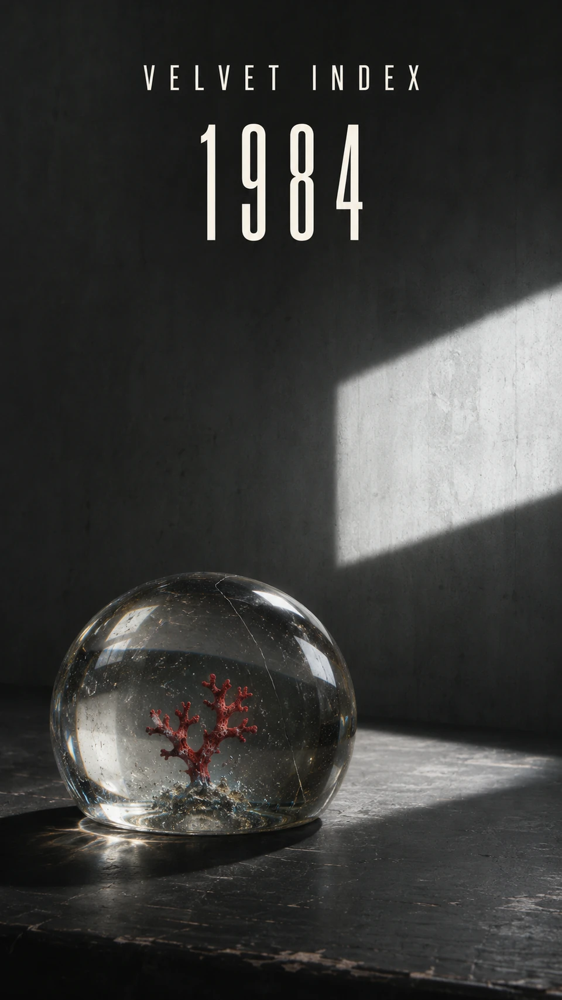
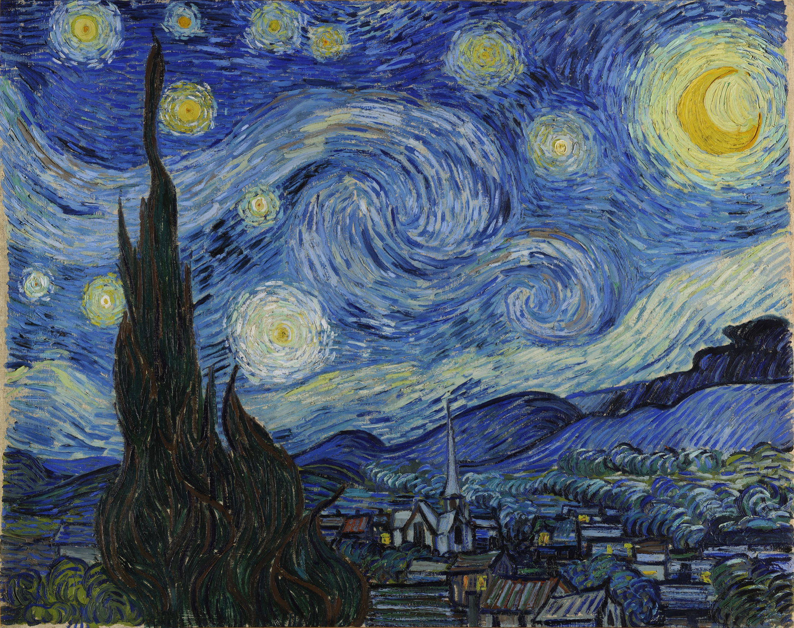

01
Velvet Index / アルバム近日公開
1984
監視下の親密さ。
1984とともに、私はジョージ・オーウェルの小説をたどり、なお抵抗し続けるものを探す。欲望、記憶、優しさ。現代的なニューウェーブとエレクトロニック・ポストパンクのあいだでアルバムは形を成し、Golden Countryがその最初の入口を開く。
Velvet Indexは、Onchainfinityの芸術的なディレクションのもと、AIとともに構想された架空のバンド。

アート / 音楽 / 文化の記憶
AIに残る私たちの痕跡をたどる。人間らしさを映し出す。
私は作品の記憶から創作し、イメージ、音楽、デジタルの世界でもう一度作品を生きる。そこに美を探している。
作品をめぐるVelvet Index / アルバム近日公開
監視下の親密さ。
1984とともに、私はジョージ・オーウェルの小説をたどり、なお抵抗し続けるものを探す。欲望、記憶、優しさ。現代的なニューウェーブとエレクトロニック・ポストパンクのあいだでアルバムは形を成し、Golden Countryがその最初の入口を開く。
Velvet Indexは、Onchainfinityの芸術的なディレクションのもと、AIとともに構想された架空のバンド。

フィンセント・ファン・ゴッホ《星月夜》（1889年）。AfterimageシリーズのStarry Signalの原点となる絵画。
絵画 / 電子音楽
私は絵画へ戻り、イメージが薄れたあとも自分の内に残るものに耳を澄ます。Afterimageはその余像を電子音楽、物語、動くイメージへと変えていく。作品のなかに住まう、もうひとつの方法として。

電子音楽 / 科学の記憶
計算機科学の礎となった文献に、私は私たちの夢と問いを探す。Robolutionは、まだ読み解き方を知らない未来の入口で、それらを電子音の質感と管弦楽の息づかいのあいだに響かせる。

アートブック / イメージ / 音楽
一匹の猫の足跡を追い、私は絵画の記憶を歩く。バベルの画廊では、イメージ、物語、音楽が、住まうことのできる一冊のアートブックを織りなす。作品と再会し、そのなかで新たに道に迷うために。
詩 / 挿画本 / 2023
私はボードレールの詩句へ戻り、そこに別の仕方で住まおうとする。AIの助けを借りて形づくられたイメージが、この挿画本の旅に寄り添う。詩は謎をすべて明かすことなく、ふたたび発見される。
フランス語原版創作の姿勢
作品を再発見し、親密な体験としてもう一度味わう喜びのために、私は作品の記憶から創作する。
AIのなかに、私は私たちの人間性の痕跡を探す。知識、夢、美しさ、そして矛盾。コードと私の選択が、それらに新たな形を与える。イメージ、本、音楽、デジタルの世界として。
驚嘆は、明日への不安を消してはくれない。今は、まだ間に合ううちに、そこに美を探している。
全文を読むOnchainfinity